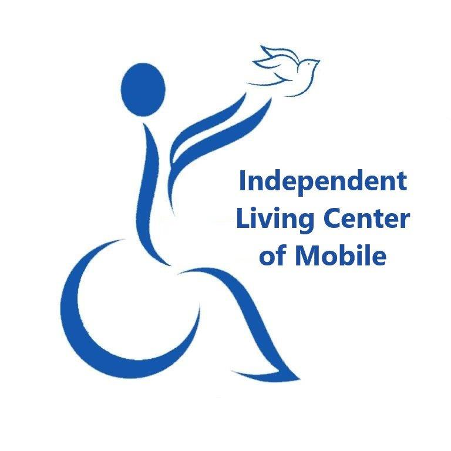

Resources for Spinal Cord Injury Survivors in Mobile, Alabama
Sponsored by:

This page compiles national and Alabama‑specific programs that help spinal cord injury survivors, veterans, caregivers, and families afford medications, home modifications, durable medical equipment, and everyday support. Always confirm current eligibility requirements directly with each program.
Discount Cards & Coupons
Alabama RxCard – free printable card; no income limits; up to 80 % savings. alabamarxcard.com
GoodRx – instant coupons for brand & generic meds; may beat insurance copays. goodrx.com
HealthWell Foundation – grants for copays, premiums & travel. ☎ 800‑675‑8416
PAN Foundation – disease‑specific copay grants. ☎ 866‑316‑7263
Kelly Brush Foundation – Active Fund – grants for adaptive sports equipment (SCI only). kellybrushfoundation.org
Challenged Athletes Foundation – adaptive sports & competition grants. challengedathletes.org
Bryon Riesch Paralysis Foundation – individual grants for equipment/home mods. brpf.org
United Healthcare Children’s Foundation – up to $5 k/yr for privately‑insured kids. uhccf.org
Help Hope Live – tax‑deductible fundraising platform for medical & mobility needs. ☎ 800‑642‑8399 helphopelive.org
Government & Veterans Financial Help
Medicare “Extra Help” – lowers Part D costs for low‑income beneficiaries. ☎ 800‑772‑1213
Alabama SenioRx – free or low-cost prescription assistance for Alabamians age 55+ with chronic conditions or those of any age who are disabled and meet income limits. Apply through your local Area Agency on Aging or visit alabamaageline.gov/seniorx.
ADRS SCI/Head Injury Trust Fund – assistance with home mods, equipment & care. ☎ 888‑879‑4706
VA Benefits – Auto allowance ($26K), HISA grant (up to $7,500), Specially Adapted Housing, caregiver stipend, etc. ☎ 877‑222‑8387 va.gov
Home Modification & Repair Resources
Area Agencies on Aging – Older Americans Act funds for accessibility. Eldercare Locator ☎ 800‑677‑1116 eldercare.acl.gov
Rebuilding Together South Alabama – free critical home repairs & ramps. ☎ 251‑289‑1684 rebuildingtogethersa.org
Habitat for Humanity – Critical Home Repair (Mobile County affiliate). ☎ 251‑476‑7171 habitat.org
FHA Title I & 203(k) Loans – HUD‑insured loans for home accessibility. hud.gov
IRS Medical Expense Deduction – medically‑necessary lifts & ramps may be tax‑deductible (Publication 502).
Assistive Technology Loans & DME Reuse
⚡Need a new Wheelchair?For newly injured spinal cord injury patients, obtaining a brand-new wheelchair can feel overwhelming and frustrating, especially for those unsure where to begin. To offer guidance and reassurance, accurate and up-to-date instructions have been posted here to provide a small measure of comfort during this challenging journey.
Face-to-face chart notes
Ask your doctor to create formal chart notes for the face-to-face visit.
The notes must clearly state why you need power mobility and, if relevant, justify any special features such as tilt and recline.
Prescription
The doctor must write a prescription for the power wheelchair.
The same prescription can (and should) also request the physical or occupational therapy evaluation.
Have the doctor fax the prescription and chart notes to the equipment provider.
Physical / Occupational Therapy evaluation
A PT or OT evaluation is required; the provider will schedule it once they receive the doctor’s prescription and notes.
The evaluation measurements will be used to finalize the chair setup for insurance approval.
Why all this is needed
The face-to-face chart notes and prescription together form the documentation the provider must submit to your insurance to authorize the power chair and any special seating functions.
Numotion Mobile – leading provider of wheelchairs, mobility equipment & related services; offers in-home evaluations, custom mobility solutions & help with insurance paperwork. ☎ 251-666-5555 numotion.com
Southern Disability Foundation – Ability Loan Program – low‑interest, extended‑term loans for assistive technology, vehicle & home accessibility needs. ☎ 334‑759‑0918 sdfalabama.com | FAQs The application for the Southern Disability Foundation Ability Loan Program can be found here:Loan Application (PDF)
Alabama AT4All – search statewide listings of free/low‑cost reused wheelchairs, lifts, etc. al.at4all.com
Goodwill “We Share” Medical Equipment – free donated DME in southwest Alabama. ☎ 251‑300‑6094
Community & Disability Support
Independent Living Center of Mobile – peer support, advocacy, resources. ☎ 251‑460‑0301 ilcmobile.org
Alabama Head Injury Foundation – statewide SCI/TBI support specialists. ☎ 800‑433‑8002 ahif.org
United Spinal Association – national peer mentoring & advocacy. ☎ 800‑962‑9629 unitedspinal.org
☎ 2‑1‑1 Connect Alabama – call ☎ 211 for local emergency aid, ramps, food & more 24/7.
Children and Adults Rehabilitation Service (CARS) – statewide clinics, assistive tech and care coordination for children and adults with disabilities. rehab.alabama.gov
Full Life Ahead Foundation – transition help for teens & young adults. fulllifeahead.org
BrainAndSpinalCord.org – designed to support individuals and families affected by spinal cord injuries (SCI) and traumatic brain injuries (TBI). brainandspinalcord.org
National & Regional SCI Support
Christopher & Dana Reeve Foundation – Paralysis Resource Center – Info specialists, peer mentoring, care navigation, free publications, and webinars. christopherreeve.org ☎ 800‑539‑7309
Model Systems Knowledge Translation Center (MSKTC) – Evidence-based fact sheets, videos, and SCI Model System hospital directory. msktc.org/sci
SCI Model System Centers Directory – Contact info for all 14 federally designated spinal cord injury hospitals. msktc.org/sci/model-system-centers
Paralyzed Veterans of America (PVA) – Free benefits help for all veterans with SCI; adaptive housing, sports grants, and nurses. pva.org ☎ 800‑424‑8200
NCHPAD – Free remote fitness coaching and adaptive workout videos for people with mobility impairments. Visit nchpad.org.
UAB Spain Rehabilitation Center (Regional – Alabama) – Inpatient/outpatient SCI care, physiatry, orthotics, and neuropsychology. uabmedicine.org ☎ 205‑934-4131
Exercise & Rehabilitation Therapy
(Physical & Occupational Therapy Options in the state of Alabama locally or Regionally)
Infirmary Health – Rehabilitation Specialists & J.L. Bedsole/Rotary Rehabilitation Hospital – A CARF-accredited inpatient and outpatient facility offering spinal cord injury rehabilitation led by physiatrists. Services include coordinated physical, occupational, and speech therapy.infirmaryhealth.org
AOC (Alabama Orthopaedic Clinic Therapy Department) – Integrated therapy team with 5 physical therapists and 3 occupational therapists specializing in spine rehabilitation, prosthesis training, myofascial release, and hand therapy. Located at 3610 Springhill Memorial Dr. N, Mobile, AL.Physical Therapy | Occupational Therapy
USA Health's Therapy Services – PT & OT services including post-SCI rehabilitation, mobility & strength restoration. 739 N. University Blvd. USA Health
YMCA of South Alabama – accessible pools & adaptive fitness programs. ymcamobile.org
Hall Therapy Services – combined PT & OT, spine care, manual therapy, McKenzie-certified spinal treatment, hand therapy. 3090 Dauphin Square Connector. halltherapy.com
UAB Spain Rehabilitation Center – inpatient/outpatient SCI care, physiatry, orthotics, and neuropsychology. ☎ 205‑934‑4131 uabmedicine.org
National Exercise & Fitness Resources
NCHPAD – free remote fitness coaching & adaptive workout videos for people with mobility impairments. nchpad.org
Christopher & Dana Reeve Foundation – NeuroRecovery Network – activity-based therapy clinics nationwide for paralysis recovery. christopherreeve.org
Paralyzed Veterans of America (PVA) Sports Programs – adaptive sports grants & training opportunities. pva.org/sports ☎ 800‑424‑8200
Move United (formerly Disabled Sports USA) – adaptive sports programs & equipment grants nationwide. moveunitedsport.org
Kelly Brush Foundation – Active Fund – grants for adaptive sports equipment (SCI only). kellybrushfoundation.org
Challenged Athletes Foundation – adaptive sports & competition grants. challengedathletes.org
Medicare Part B Physical Therapy – covers medically necessary PT/OT with physician referral. ☎ 800‑633‑4227
Wings Across Alabama – Alabama Warm Line – 24/7 peer support from Certified Peer Specialists with lived experience. ☎ 844‑999‑4647 wingsacrossal.org
Wings Across Alabama – Support Groups – variety of peer-led support & educational groups, including ART (Art as Recovery Tool) & Music support groups. Email: cpssupport@wingsacrossal.org
Wings Across Alabama – Veterans Support – mental health peer support for veterans & families, including female-identifying veterans group. Email: veterans@wingsacrossal.org
Wings Across Alabama – APPR Wellness Course – free Action Planning for Prevention and Recovery course for mental health recovery. Email: wellness@wingsacrossal.org
NAMI Alabama (National Alliance on Mental Illness) – support groups, education & advocacy. ☎ 334‑396‑4797 namialabama.org
Crisis Text Line – 24/7 crisis support via text. Text HOME to 741741
Alabama Department of Mental Health – community mental health centers statewide. ☎ 334‑242‑3454 mh.alabama.gov
Wellness Collective – Mobile County – trauma-informed counseling, psychiatric medication management, group therapy, and integrative wellness care. ☎ 251‑450‑2211 wellnesscollectiveal.com
BetterHelp – online therapy with financial assistance available. betterhelp.com
Open Path Psychotherapy Collective – affordable therapy ($30‑$60/session). openpathcollective.org
Psychology Today Therapist Directory – find local therapists who accept insurance or sliding scale. psychologytoday.com